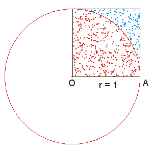
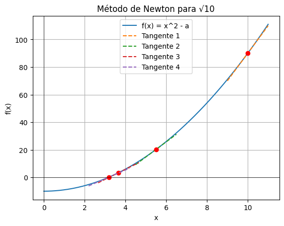
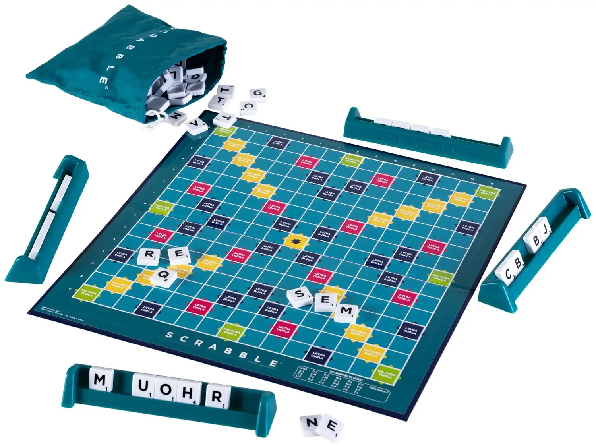

Estruturas de repetição¶
-
Chico tem 150 cm e cresce 2cm por ano, enquanto Zé tem 110cm e cresce 3cm por ano. Faça um programa que calcule e imprima quantos anos são necessários para que Zé fique mais alto que Chico.
-
Faça um programa que leia as notas de um aluno e calcule a média das notas. Não se sabe, de antemão, o número de notas a serem lidas, e a leitura deve encerrar quando uma nota negativa for informada (a nota negativa não deve ser usada no cômputo da média).
-
Na matemática, um número perfeito é aquele no qual a soma dos seus divisores positivos próprios (excluindo-o) é igual ao próprio número. Por exemplo, 6 é perfeito, pois \(1 + 2 + 3 = 6\). Escreva um programa que leia um número inteiro positivo menor ou igual a \(10^8\) e indique se o número é perfeito ou não.
-
Faça um programa que imprima os múltiplos positivos de 7, menores que 1000
-
Determinado material radioativo tem meia-vida de 70 segundos (tempo necessário para que a massa da amostra se reduza à metade). Faça um programa que leia a massa inicial e diga quanto tempo (em dias, horas, minutos e segundos) é necessário para que reste menos de 0,02g do material.
-
A sequência de Fibonacci é formada pelos números 0, 1, 1, 2, 3, 5, 8, 13, 21... (o número da vez é a soma dos dois anteriores, sendo que o primeiro vale zero, e o segundo vale um). Faça um programa que imprima a sequência de Fibonacci até o n-ésimo termo, informado pelo usuário.
-
Faça um programa que leia o número de andares de um prédio e, em seguida, para cada andar do prédio, leia o número de pessoas que saíram e o número de pessoas que entram naquele andar. Considere que o elevador está no térreo e inicialmente vazio. O elevador nunca pode ter mais de 7 pessoas simultaneamente dentro dele. Se, em algum momento, houver mais de 7 pessoas no elevador, imprima uma mensagem e deixe apenas 7 pessoas dentro dele. Imprima o número de pessoas que chegaram ao último andar.
-
Escreva um programa que receba um número inteiro, com qualquer quantidade de dígitos, e escreva na tela os dígitos que compõem o número de trás para a frente. Por exemplo, se for digitado o valor "4532", o programa deve imprimir "dois três cinco quatro".
-
Em uma chácara, há várias galinhas e porcos. Escreva um programa que solicite ao usuário o total de cabeças e o total de pés, e determine quantas galinhas e quantos porcos há na chácara.
-
Produza uma aproximação do valor de \(\pi\) utilizando a série de Gregory-Leibniz (abaixo). O cálculo deve parar quando a diferença ente \(\pi\) calculado até o terno \(n\) e o calculado até o termo \(n+1\) for menor que \(10^{-5}\). Imprima o valor calculado de \(\pi\) e o número de termos que foram utilizados no cálculo da série. Cuidado com a alternância de sinal entre os termos da série.
\[ \pi = 4 - \dfrac{4}{3} + \dfrac{4}{5} - \dfrac{4}{7} + \dfrac{4}{9} \ldots \] -
Outra forma de obter uma aproximação do valor de π é por meio da série de Nilakantha (abaixo). Obtenha uma aproximação de \(\pi\) com o uso dela. O cálculo deve parar quando a diferença ente \(\pi\) calculado até terno \(n\) e o calculado até o termo \(n+1\) for menor que \(10^{-5}\). Imprima o valor calculado de \(\pi\) e o número de termos que foram utilizados no cálculo da série. Cuidado com a alternância de sinal entre os termos da série.
\[ \pi = 3 + \dfrac{4}{2 \times 3 \times 4} - \dfrac{4}{4 \times 5 \times 6} + \dfrac{4}{6 \times 7 \times 8} - \dfrac{4}{8 \times 9 \times 10} \ldots \] -
Métodos de Monte Carlo são métodos estatísticos que sem baseiam em amostragens aleatórias para a obtenção de resultados numéricos. Nesses métodos, dada uma probabilidade \(p\) que determinado evento ocorra em certas condições, um computador pode ser usado para gerar essas condições por várias vezes. O número de vezes que o evento ocorreu dividido pelo número de vezes que a condição foi gerada deve ser aproximadamente igual a \(p\). Por exemplo, vamos considerar um disco de raio 1 inscrito em um quadrado de lado 2. É possível gerar pontos aleatórios dentro do quadrado e contar quantos caem dentro do disco. A razão entre o número de pontos dentro do círculo e o total de pontos gerados é uma aproximação de \(\pi\). Observe que, como podemos dividir o disco em quatro seções iguais (ou quadrantes), cada uma inscrita em um quadrado de lado 1 (ver figura abaixo1 ), podemos limitar esse teste ao quadrado de lado 1 e multiplicar o número resultante por quatro. Construa um programa que faça a estimativa do valor de \(\pi\) utilizando este método com 1.000.000 de pontos aleatórios2.

Estimando o valor de \(\pi\) com lançamentos aleatórios
-
Determinada universidade fez uma pesquisa entre os alunos para saber o quanto eles usam o restaurante. Faça um programa que leia um conjunto de respostas de alunos e imprima o total absoluto e em termos percentuais, de alunos que usaram o restaurante: a) menos de 10 vezes; b) mais de 10 e menos de 25 vezes, e; c) 25 vezes ou mais durante o mês. O programa deve parar de ler respostas quando for digitado o valor -1.
-
Construa um programa que leia a largura L e a altura A de um retângulo e desenhe-o na tela. Por exemplo, se o usuário pedir largura 10 e altura 4, o seguinte retângulo deve ser desenhado na tela
-
Construa um programa que leia um número inteiro \(n\), calcule e mostre o maior quadrado menor ou igual a \(n\). Por exemplo, se \(n\) for igual a 38, o maior quadrado é 36.
-
Faça um programa que imprima os primeiros 20 números inteiros que quando divididos por 11 produzem 5 de resto.
-
Construa um programa que imprima uma tabela de conversão de temperatura entre graus Celsius (\(C\)), graus Fahrenheit (\(F\)) e Kelvin (\(K\)). A tabela deve englobar as temperaturas entre -40 a +40oC, com intervalo de 2oC entre cada uma delas. As fórmulas são \(F = C \times \frac{9}{5} + 32\) e \(K = C + 273.15\)
-
Escreva um programa que leia o número \(n\) de termos de uma progressão aritmética, o primeiro termo (\(a_1\)) da progressão e a razão \(r\) da progressão e escreva os \(n\) termos desta progressão, bem como a soma dos elementos.
-
A divisão de dois números pode ser feita como uma sucessão de subtrações do valor do divisor do valor do dividendo. O número de divisões que puderam ser feitas antes de o dividendo ficar menor que zero é o quociente, e o que sobrou do dividendo é o resto da divisão. Faça um programa que leia o dividendo e o divisor e apresente o quociente e o resto utilizando o método das subtrações sucessivas.
-
Faça um programa que leia valores inteiros positivos e diga, no final, quantos números pares foram lidos, quantos números ímpares foram lidos, o maior número lido e o menor número lido. A entrada de dados para com a digitação do valor -1.
-
Faça um programa que imprima os primeiros 100 números inteiros que não são múltiplos de 7 ou que terminam em 7 (1, 2, 3, 4, 5, 6, 8, 9, 10, 11, 12, 13, 15, 16, 18, ...)
-
O voleibol é um esporte disputado em uma quadra dividida ao meio por uma rede, com dois times de 6 jogadores cada, onde o objetivo é fazer a bola passar sobre a rede de modo a que a bola toque no chão dentro da quadra adversária, ao mesmo tempo que se evita que os adversários consigam fazer o mesmo. O jogo começa com o saque de um dos times. Logo depois do saque, a bola deve ultrapassar a rede e seguir ao campo do adversário onde os jogadores tentam evitar que a bola entre no seu campo usando qualquer parte do corpo. O jogador pode rebater a bola para que ela passe para o campo adversário sendo permitidos dar três toques na bola antes que ela passe, sempre alternando os jogadores que dão os toques. Caso a bola caia, é ponto do time adversário. O jogador não pode encostar na rede e, caso isso ocorra, o ponto será para o outro time. O mesmo jogador não pode dar 2 ou mais toques seguidos na bola, exceção no caso do toque de Bloqueio. Cada partida é dividida em sets que terminam quando uma das duas equipes conquista 25 pontos. Deve haver também uma diferença de no mínimo dois pontos com relação ao placar do adversário - caso contrário, a disputa prossegue até que tal diferença seja atingida. O vencedor é a equipe que ganhar, primeiro, três sets. Você deve construir um programa que, a cada indicação de ponto feita (1 para o primeiro time, e 2 para o segundo time), indique o placar atual. Quando faltar um ponto para um time vencer um set, escreva "set point" e, quando um time vencer, escreva o número do time que ganhou.
-
Na bolsa de valores, um investidor normalmente faz "preço médio" de um papel. A ideia é tentar entrar no papel em preços diferentes, exatamente para tê-lo na carteira com um preço que seja a média do preço dele ao longo de determinado tempo. O preço médio é calculado como uma média ponderada dos preços de compra. Quando um papel é vendido, calcula-se o LAIR (lucro antes do imposto de renda) como sendo a diferença entre o preço de venda e o preço médio de compra. Sobre o lucro da operação, o investidor paga 15% de imposto de renda, mas legislação permite que sejam alienados (vendidos) até \(R\$~20000.00\) por mês sem que seja necessário pagar imposto de renda sobre o lucro. Por exemplo, se forem compradas 100 ações de determinado papel a 10.00, e 300 ações a 7.00, o preço médio é:
\[ \dfrac{100\times10+300\times7}{100+300}=7.75 \]Se as 400 ações fossem vendidas a 10,00, o LAIR seria de 900,00 e não haveria imposto a pagar. Construa um programa que leia um inteiro N dizendo quantas compras foram feitas, N pares de valores indicando quantas ações foram compradas e a que preço, e um valor que indica o preço de venda (assuma que todas as ações compradas foram vendidas); a partir disso, calcule e imprima o LAIR e o valor do imposto a ser pago.
-
Um bit de paridade é um mecanismo simples para detectar erros na transmissão de dados em uma linha de comunicação não-confiável. A ideia básica é adicionar um bit a cada 7 bits transmitidos, para permitir que um bit errado seja detectado. O bit de paridade pode ser calculado tanto para paridade par quanto para paridade ímpar. Se for escolhida a paridade par, o bit de paridade é escolhido de forma que o total de bits 1 transmitidos (os 7 bits de dado mais o bit de paridade) seja um número par. Na escolha da paridade ímpar, o processo é análogo (total de bits 1 deve ser ímpar). Escreva um programa que permita ao usuário escolher se ele quer paridade par ou ímpar e, em seguida, receba um número não conhecido a priori de sequências de sete dígitos 0 ou 1 (representando os bits), calcule e imprima a paridade correspondente aos bits recebidos. O programa deve parar quando a sequência de bits contiver menos de 7 bits.
-
O "Jogo do Pin" era uma das brincadeiras mais populares do programa "Domingo no Parque", apresentado por Silvio Santos. A dinâmica era simples, mas exigia atenção e raciocínio rápido dos participantes. Uma pessoa da plateia era escolhida para participar e deveria contar de 1 a 30 (ou até um número definido por Silvio Santos), em voz alta. Sempre que a contagem chegasse a um número múltiplo de 4, o participante deveria substituir o número por "Pin". Construa um programa que receba o limite superior da contagem, e escreva a sequência de "números e pins" para ganhar o Jogo do Pin.
-
O método de Newton, também conhecido como método de Newton-Raphson, é um algoritmo iterativo muito eficiente para encontrar aproximações para as raízes (ou zeros) de uma função real. Ele pode ser adaptado para calcular a raiz quadrada de um número de forma bastante eficaz. O método de Newton se baseia na ideia de aproximar a raiz de uma função por meio de retas tangentes ao gráfico da função (veja abaixo o gráfico para a estimativa de $\sqrt{10}). A cada iteração, uma nova aproximação é calculada, que se torna cada vez mais precisa. Para calcular a raiz quadrada de um número \(a\), podemos usar a fórmula iterativa \(x_{n+1} = \frac{1}{2} \times (x_n + \frac{a}{x_n})\) onde \(x_0\) é uma estimativa inicial para a raiz quadrada de \(a\), e \(x_{n+1}\) é a próxima aproximação da raiz quadrada. O algoritmo é interrompido quando \(x_n - x_{n-1} < \varepsilon\). O valor de \(\varepsilon\) deve ser definido pelo usuário, tipicamente variando entre \(10^{-6}\) e \(10^{-9}\). Construa um programa que receba o valor de \(a\), de \(x_0\) e de \(\varepsilon\) e mostre a aproximação de \(\sqrt{a}\) com 8 casas decimais. As iterações devem parar quando \(\varepsilon < 10^{-7}\).

-
O maior divisor comum (MDC) entre dos inteiros positivos, \(n\) e \(m\), é o maior número, \(d\), que divide tanto \(n\) quanto \(m\) sem deixar resto. Há vários algoritmos que podem ser usados para resolver esse problema, incluindo o representado no fluxograma abaixo.
graph TD; Inicio --> A A --> B B -- Sim --> C --> E B -- Não --> D --> E E -- Sim --> F --> E E -- Não --> G --> Fim Inicio@{shape: terminal} A@{shape: manual-input, label: "n, m"} B@{shape: decision, label: "m < n"} C@{shape: process, label: "d ← m"} D@{shape: process, label: "d ← n"} E@{shape: decision, label: "m MOD d ≠ 0<br />ou<br />n MOD d ≠ 0" } F@{shape: process, label: "d ← d - 1"} G@{shape: display, label: "d"} Fim@{shape: terminal}Escreva um programa que leia dois inteiros positivos e, utilizando o algoritmo acima, calcule e imprima o MDC entre eles.
-
Escreva um programa que converta e imprima um número binário (base 2) com até 16 bits para o seu equivalente decimal (base 10). O seu programa deve ler o número como uma cadeia de caracteres e calcular o número decimal equivalente processando cada dígito do número binário.
-
Repita o exercício anterior considerando que a entrada é um número hexadecimal (base 16) com até 4 dígitos. Caso você não lembre, a base 16 possui os dígitos \(\{0, 1, 2, 3, 4, 5, 6, 7, 8, 9, A, B, C, D, E, F\}\).
-
Em experimentos científicos, é comum analisarmos um conjunto de dados \(x = \{x_0, x_1, x_2, ..., x_n \}\). Nesses casos, pode ser útil remover os outliers (valores atípicos) antes de realizar outros cálculos. Um valor \(x_i\) é considerado um outlier se:
\[ x_i < (\bar{x} - 3s) \quad \text{ou} \quad x_i > (\bar{x} + 3s) \]onde:
\[ s = \sqrt{\frac{\sum_{i=0}^n{(x_i - \bar{x})^2}}{n-1}} \quad \text{(desvio padrão amostral)}\\ \bar{x} = \dfrac{\sum_{i=0}^n{x_i}}{n} \quad \text{(média amostral)} \]A "Regra dos 3 Sigmas" é uma heurística comum para identificar outliers em distribuições aproximadamente normais. Construa um programa que leia o número \(n\) de valores reais a serem lidos (\(2 < n < 100\)), leia os \(n\) valores, e imprima os outliers.
-
"Ais, enter, inis, omber, uft" é uma brincadeira de linguagem que transforma palavras substituindo as vogais por "ais", "enter", "inis", "omber" e "uft", criando uma espécie de "idioma secreto". A partir de uma palavra comum, cada uma das vogais na palavra original é substituída por uma das cinco sequências: "ais", "enter", "inis", "omber" e "uft". Por exemplo, BAnANa vira baisnaisnais, liVRo vira linisvromber e comPUtadOR vira combermpufttaisdomberr. Construa um programa que leia uma palavra com até 20 caracteres e apresente a palavra transformada. Antes de transformar a palavra, converta todas as letras para minúsculas.
-
Uma lista de valores \(x = \{x_0, x_1, x_2..., x_n\}\) é considerada ordenada de forma ascendente se, para todo o índice \(i\) no intervalo \([0, n-1]\), a condição \(x_i \leq x_{i+1}\) for satisfeita. Construa um programa que leia um conjunto de \(n\) valores inteiros (\(1 < n < 100\)) e diga se os valores compõem ou não uma lista ordenada de forma ascendente.
-
Nos celulares de antigamente, para enviar uma mensagem de texto, era preciso "digitar" a mensagem usando apenas o teclado numérico. Isso era possível porque, para cada uma das teclas numéricas (0, 1, 2, 3, 4, 5, 6, 7, 8 e 9) existia um conjunto de símbolos associado, de acordo com a tabela abaixo:
Tecla Símbolos 1 .,?!:2 ABC3 DEF4 GHI5 JKL6 MNO7 PQRS8 TUV9 WXYZ0 Espaço Para escrever, por exemplo,
BOLA, era preciso apertar22 666 555 2. Construa um programa onde o usuário digita uma frase com até 20 caracteres e a sequência de teclas correspondente é apresentada na tela. Ignore qualquer símbolo presente na frase do usuário e que não exista na tabela anterior. -

Scrabble é um jogo de tabuleiro criado em 1938, durante a Grande Depressão, pelo norte americano Alfred Butts. Nele, dois a quatro jogadores procuram marcar pontos formando palavras interligadas, usando pedras com letras num quadro dividido em 225 casas (15 x 15). Cada letra possui uma pontuação, que é inversamente proporcional à frequência relativa dessas letras nas palavras presentes no idioma do jogo (a pontuação das letras no jogo vendido nos países que falam inglês é diferente da pontuação das letras no jogo vendido nos países que falam francês, por exemplo). No caso do português, a tabela de pontos é a seguinte3:Pontos Letras 1 AEIOSUMRT2 DLCP3 NB4 FGHV5 J6 Q8 XZPor exemplo, se alguém jogar a palavra
CADERNO, vai fazer 11 pontos4. Construa um programa que leia uma palavra com até 15 letras e calcule a pontuação da palavra utilizando a tabela acima. Letras que não estão presentes na tabela acima e outros símbolos possuem valor zero. -
O run-length encoding (RLE) é um método de compressão de dados sem perdas que visa reduzir o tamanho de arquivos que contêm sequências repetidas de dados. Ele é particularmente eficaz em arquivos com padrões repetitivos, como imagens monocromáticas ou arquivos de texto simples. O RLE funciona substituindo sequências de dados idênticos por um código que indica o valor do dado e o número de vezes que ele se repete. Em vez de armazenar cada valor repetido individualmente, o RLE armazena apenas o valor e a contagem. Por exemplo, a sequência
AAAAABBBCCDAApode ser compactada como5A3B2C1D2A. Neste exemplo,5Asignifica que o caractereAse repete 5 vezes,3Bsignifica que o caractereBse repete 3 vezes e assim por diante. Construa um programa que receba uma cadeia de caracteres com até 100 símbolos e imprima a cadeia compactada em RLE. -
Baseado no problema anterior, construa um programa que receba uma cadeia de caracteres compactada em RLE com até 100 símbolos e imprima a cadeia de caracteres original. Considere que, na cadeia compactada em RLE, cada símbolo pode se repetir, no máximo, 9 vezes.
-
https://www.r-bloggers.com/happy-pi-day-now-go-estimate-it/ ↩
-
Apesar de métodos de Monte Carlo serem úteis para a solução de vários problemas em matemática e física que não podem ser resolvidos de forma analítica, a adoção deste método para a estimativa do valor de \(\pi\) é bem lento. Para calcular cada dígito significativo depois da vírgula são necessárias dez vezes mais pontos aleatórios que os necessários para calcular o dígito anterior. ↩
-
Marcas diacríticas (letras acentuadas, por exemplo) são ignoradas.
K,WeYestão ausentes, pois não eram letras oficiais até o Acordo Ortográfico de 1990, depois de o jogo ter sido introduzido no Brasil. ↩ -
Tem alguns outros detalhes na regra de pontuação, como por exemplo, em qual lugar do tabuleiro a palavra foi formada, mas vamos simplificar. ↩